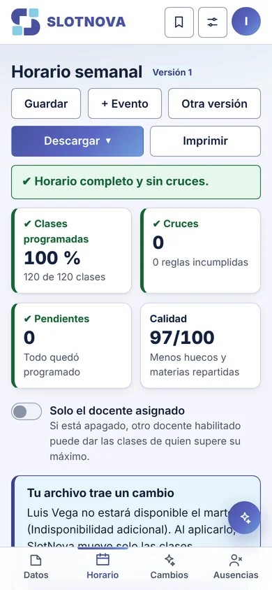

Rediseño
Del troquel a la caja: rediseñar la Cajita Feliz
Diseñar un empaque obliga a pensar en plano y en volumen a la vez. Cómo resolví que las alas siguieran leyéndose una vez armada la caja.
Todo lo que he hecho, repartido en cuatro oficios. Elige uno para verlo.
Empaques y etiquetas, campañas para redes, revista, pósteres y pixel art. Piezas donde la marca tiene que sostenerse sola.
Rediseño
Diseñar un empaque obliga a pensar en plano y en volumen a la vez. Cómo resolví que las alas siguieran leyéndose una vez armada la caja.
Proceso creativo
Cinco publicaciones que debían verse como una sola campaña. Lo que aprendí construyendo un sistema visual antes de diseñar la primera pieza.
Ilustración y redacción
Diseñar páginas de revista me enseñó a pensar en bloques de lectura, no solo en imágenes bonitas. Estas son mis conclusiones.
Animación y Publicidad
Animar un producto no es solo moverlo: es decidir en qué momento se revela la marca. Así construí el timing de esta pieza en After Effects.
Etiqueta
Una etiqueta que cuenta de dónde viene el café: la arquitectura de la región dibujada a línea dentro de un grano gigante, con una paleta de dos tintas pensada para imprimir.
Pixel art
Dos rostros enfrentados construidos píxel por píxel. Trabajé con pocos colores planos y bordes marcados para que se vea nítido tanto estampado en una camiseta como en un cuadro.
Póster
Historia, circuitos, logros y pilotos en una sola pieza. El reto fue ordenar mucha información con jerarquía clara, usando ilustración a línea y el rojo de la marca para guiar la lectura.
Lo que pasa después de grabar: montaje, ritmo y animación. Cada pieza se reproduce desde acá.
Video institucional
Pieza para las redes del Instituto Técnico Los Patios Centro 2. Los estudiantes cuentan en primera persona cómo cuidan las zonas verdes de la institución. Formato vertical, montaje a ritmo de testimonio.
Video para redes
Reel para la perfumería 1076. La asesora presenta los combos de la campaña en el punto de venta, con el letrero de neón de la marca siempre en cuadro. Corte rápido pensado para consumo en celular.
Juegos web que programo y diseño yo misma. Petunia es la máquina rival que los une a todos.
Páginas y aplicaciones web que diseño y construyo, pensadas para funcionar en computador y en celular.

Hackathon Colombia 5.0 · Reto Gnosoft · Cúcuta 2026
«La IA entiende, el motor garantiza.»
Una aplicación web que arma el horario de un colegio en segundos a partir de su Excel, sin un solo cruce. Explica lo que no se pudo programar y lo reacomoda cuando alguien escribe o dice «Luis no viene el martes». Quedamos en tercer puesto.
Equipo: Santiago Sarmiento, Santiago Colmenares y Cielo Caicedo